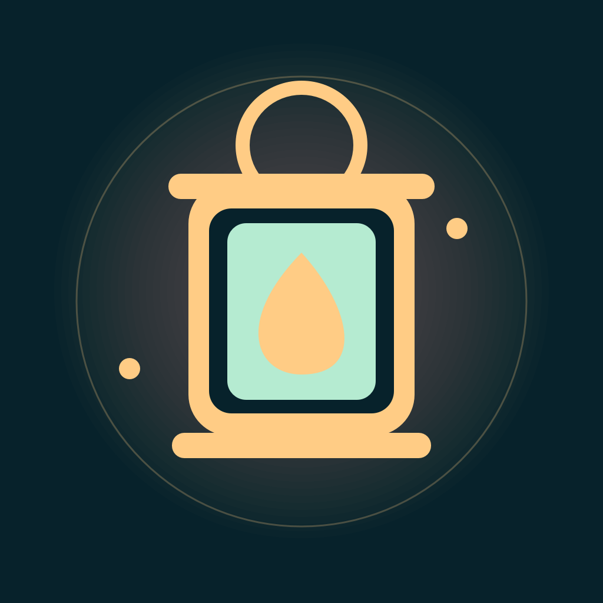

01 / SCOUT
Study the route
Trace a path through a compact grid while you can still see it.

Lantern RelayOne player studies a path. The other takes the phone and follows it from memory. Lantern Relay turns a shared screen into a little test of attention, trust, and clear directions.
Trace a path through a compact grid while you can still see it.
The route disappears. Your partner takes the Keeper’s turn.
Guide the Keeper from memory. Fewer peeks and wrong turns earn a brighter lantern.
Lantern Relay is an offline, two-player pass-and-play puzzle for iPhone. Campaign progress, an active route, and the haptics preference are saved on your device. The app has no account, network service, analytics tools, ads, or in-app purchases.
TestFlight access and an App Store listing are not available yet.